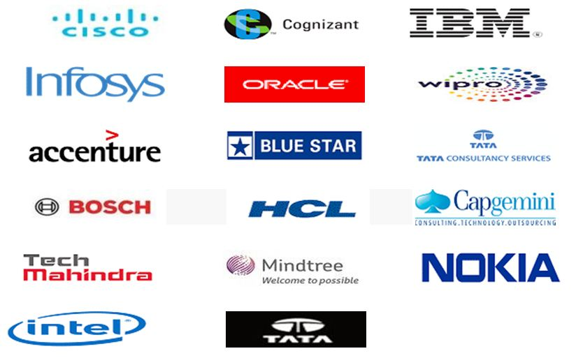

Introduction to Software Development
B.VOC in Software Development is a three-year Undergraduate (UG) program that aims at imparting practical and industry relevant skill in the domain of computer science and software development.ON
Software Development (branch) is designed to cater the demands of professionally trained human resource in the field of Software Development. Curriculum for this program covers most of the foundational aspects of IT Sector and also focus on the software developing skills.
 "This branch is highly relevant for all those students who want to pursue a professional career in software development field."
"This branch is highly relevant for all those students who want to pursue a professional career in software development field."ADMISSION and eligibility INTO B.VOC
Majority of the Universities/Colleges conduct a common entrance test for admission into B.Voc. courses Colleges/Institutes as well as some may consider the merit-based selection of the student, it depend from college to college. The basic eligibilities for the B.VOC (software development) and other branches are:-
| Software development |
|---|
|
 The best thing about this course is that, any student who wants to pursue their career after 12th in IT and Software’s they can apply for this.
The best thing about this course is that, any student who wants to pursue their career after 12th in IT and Software’s they can apply for this.
For admission in IP University and its more detail click here
Difference between other DEGREES
There are some key points which makes the b.voc software development different from other IT Degrees or courses:-
- The b.voc has the revived syllabus according to today’s need in the economy and IT world.
- Its semester subjects is selected or designed to develop IT skill as well as to promote Entrepreneurship among students.
- It is different from any other degree courses because it has Class Room Training as well as Industrial Training which other not.
| B.VOC |
|---|
|
| Other degrees |
|---|
|
Some of the review from the mentors and experienced students:-
Scope & Placement
There are many career options after the B.voc (software development), which depends on your skills that you learned in your academic session. As if any student wants to exit the course, they have employability opportunities in the following fields:
| After 1st year |
|---|
|
| After 2nd year |
|---|
|
| After 3rd year |
|---|
|
These are some of the domains which are available for the fresher B.voc (Software development) students. The salary offer to a candidate may vary depending upon the skiils of the candidate. And these salary packages are just for fresher’s, the more candidate gain experience the more it will rise in future.
| Domain | Role | Average salary as a fresher | Online job portals |
|---|---|---|---|
| Website developer | The job involves design structuring and creation of web pages to be displayed on the website. | 2.5 LPA | APPLY NOW |
| Software Tester | The job involves testing of software, UI, and applications to detect any bug or glitch in it and removing it accordingly. | 1.6 LPA | APPLY NOW |
| UI Designer | The job involves creating, developing and maintaining user interface based software for ATMs, Ticket counters etc. | 2.6 LPA | APPLY NOW |
| Application developer | The job involves development and coding in regards to user-friendly apps for portable devices like mobiles and tablets. | 2.7 PLA | APPLY NOW |
| Graphic designer | A graphic designer is involved in the creation of multidimensional designs and graphics for websites, apps, promotion etc. | 2.2 PLA | APPLY NOW |
| Database Administrator | An IT professional who ensures that the software used to manage a database is properly maintained. | 2.6 LPA | APPLY NOW |
| Java Developer | The job involves development of software sans system programs with the java language. | 2.5 LPA | APPLY NOW |

COLLEGE Placement
The Placement can vary upon college to college and their placement cells. If i talk about some colleges in Delhi, some good colleges provide campus drives mostly. Average colleges provide less campus drives and mostly provide pool campus drives (where student have to go in other colleges or places to give aptitude test) and off campus drives.
These are some of the companies who visit Government NCT colleges for placement drives for B.voc students:-

B.voc SD Student with the efficient skills and capabilities can apply for any off campus placement drives in any company. Many companies conduct off campus drives for all computer science students (like BCA, B.tech CSE, others, etc). Where B.voc students have the same platform like others, and they can grab the opportunities with their skills.

What after B.VOC
Further study opportunities after the b.voc course.
The b.voc course is similar to any other degree programs available. B.VOC is recognised by UGC ( University Grands Commission ) authority. After completion of 3 year degree you will be eligible for
M.Voc is Master of Vocation course which is introduced by UGC so that B.Voc. graduates could go for Master’s Degree in vocational education after completing their B.Voc. education.
Such as after B.voc (Software development), student can apply for any Computer Science / applications Post graduation courses ( M.Sc/ MCA).
Some Universities/colleges have the Eligibility criteria of mathematics as a subject in students 10+2 or any one year of graduation. It depends on universities to universities and on their criteria’s.
Students who are interesded in Management studies after graduation they can apply for MBA program. For an MBA, you just need to be a graduate in any stream with minimum 50%, and must have cracked CAT, MAT, or XAT with good scores.(Depends on Universities)
Student who want to study law and interested in it they can opt LLB after graduation. Its basic eligibility is 45% marks (40% for reserved category) in the graduation
| After graduation, B.VOC students can apply for these following government exams:- |
|---|
|